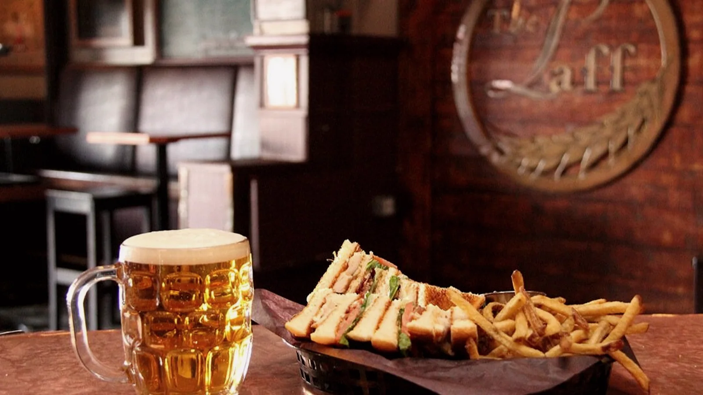
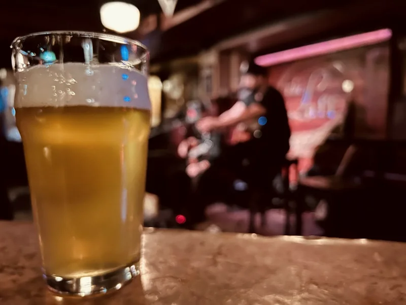
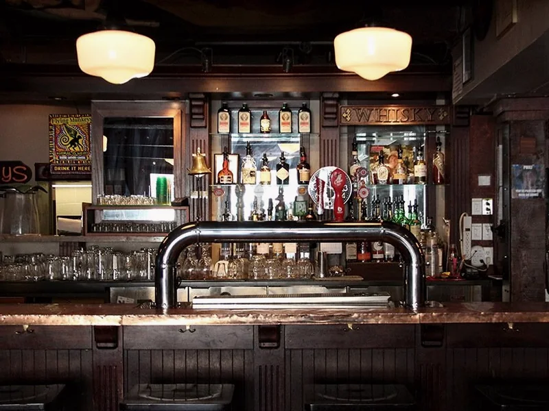
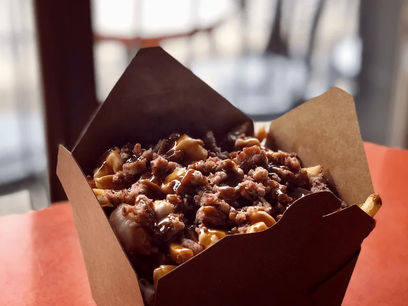
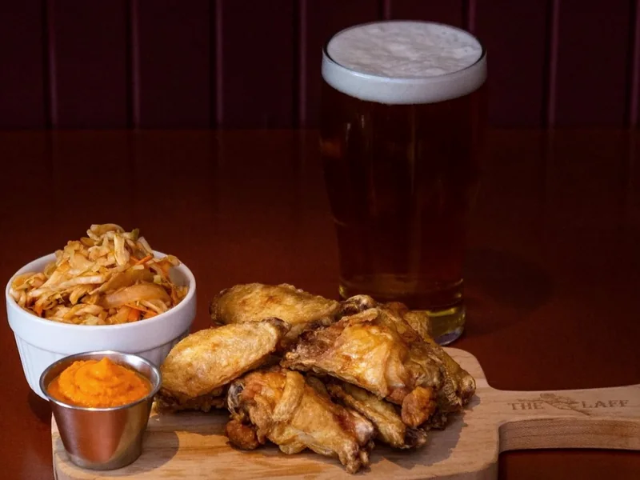
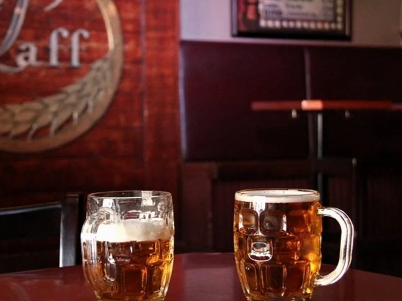
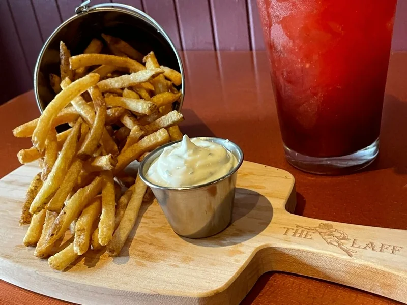
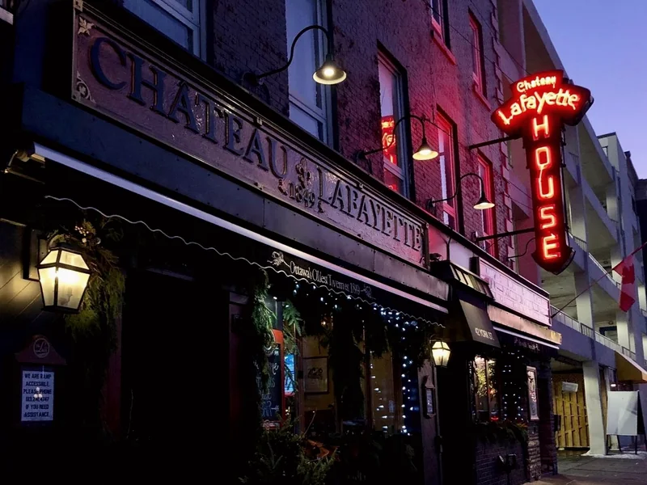

Poutine
Fries, cheese curds and gravy, with add-ons available.
$8 / $12
Ottawa’s oldest tavern · Est. 1849
Step into a ByWard Market original for cold drinks, classic pub food and live music every day — always with no cover.

The ByWard Market living room
The Laff has welcomed neighbours, visitors and generations of musicians since 1849. Come for the history; stay because the room still feels easy, warm and unmistakably Ottawa.
There is live music every day and no cover. The official events calendar has the current lineup.
Read the official storyInside The Laff
Official photography from the bar, stage, kitchen and York Street home.

The historic bar
Poutine
Wings
Cold beer, warm stage
Pub favourites
42 York StreetOpen daily
Tavern hours are 11AM–2AM every day. Kitchen: Sun–Wed 11AM–10PM; Thu–Sat 11AM–11PM.
Come as you are
No reservations — just come by. For the current music lineup, check the official events calendar before you head over.